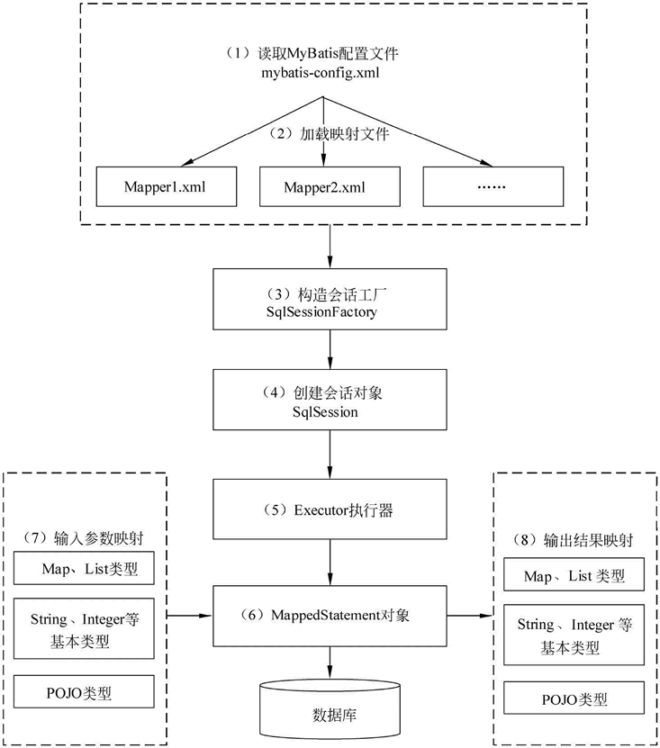
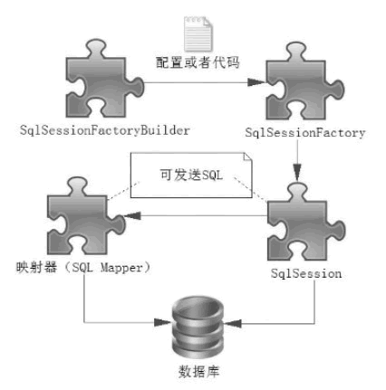
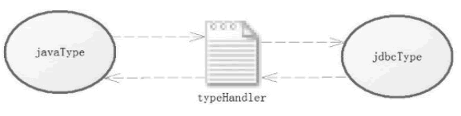

java_mybatis学习要点¶
MyBatis 是一个小巧、方便、高效、简单、直接、半自动化的持久层框架，Hibernate 是一个强大、方便、高效、复杂、间接、全自动化的持久层框架。
工作原理¶

核心组件¶
SqlSessionFactoryBuilder、SqlSessionFactory、SqlSession和SQL Mapper
1）SqlSessionFactoryBuilder（构造器）：它会根据配置或者代码来生成 SqlSessionFactory，采用的是分步构建的 Builder 模式。
2）SqlSessionFactory（工厂接口）：依靠它来生成 SqlSession，使用的是工厂模式。
3）SqlSession（会话）：一个既可以发送 SQL 执行返回结果，也可以获取 Mapper 的接口。在现有的技术中，一般我们会让其在业务逻辑代码中“消失”，而使用的是MyBatis提供的 SQL Mapper接口编程技术，它能提高代码的可读性和可维护性。
4）SQL Mapper（映射器）:MyBatis 新设计存在的组件，它由一个 Java 接口和 XML 文件（或注解）构成，需要给出对应的 SQL 和映射规则。它负责发送 SQL 去执行，并返回结果。

SqlSessionFactory及其常见创建方式¶
SqlSessionFactory 是一个接口，在 MyBatis 中它存在两个实现类：SqlSessionManager 和 DefaultSqlSessionFactory。
一般而言，具体是由 DefaultSqlSessionFactory 去实现的，而 SqlSessionManager 使用在多线程的环境中，它的具体实现依靠 DefaultSqlSessionFactory，
http://c.biancheng.net/uploads/allimg/190704/5-1ZF416213S21.png
两者的区别主要就是
SqlSessionManager 实现了Session接口。意味着，SqlSessionManager集成了 sqlSessionFactory和session 的功能。通过SqlSessionManager，开发者可以不在理会SqlSessionFacotry的存在，直接面向Session编程。
SqlSessionManager 内部提供了一个sqlSessionProxy,这个sqlSessionProxy提供了所有Session接口的实现，而实现中正是使用了上面提到的本地线程保存的session实例。
这样，在同一个线程实现不同的sql操作，可以复用本地线程session，避免了DefaultSqlSessionFactory实现的每一个sql操作都要创建新的session实例。
用 XML 构建 SqlSessionFactory
mybatis-config.xml，放在工程类路径下，其内容如下所示。
<?xml version="1.0" encoding="utf-8"?>
<!DOCTYPE configuration PUBLIC "-//mybatis.org//DTD Config 3.0//EN"
"http://mybatis.org/dtd/mybatis-3-config.dtd">
<configuration>
<typeAliases><!--别名-->
<typeAliases alias="user" type="com.mybatis.po.User"/>
</typeAliases>
<!-- 数据库环境 -->
<environments default="development">
<environment id="development">
<!-- 使用JDBC的事务管理 -->
<transactionManager type="JDBC" />
<dataSource type="POOLED">
<!-- MySQL数据库驱动 -->
<property name="driver" value="com.mysql.jdbc.Driver" />
<!-- 连接数据库的URL -->
<property name="url"
value="jdbc:mysql://localhost:3306/mybatis?characterEncoding=utf8" />
<property name="username" value="root" />
<property name="password" value="1128" />
</dataSource>
</environment>
</environments>
<!-- 将mapper文件加入到配置文件中 -->
<mappers>
<mapper resource="com/mybatis/mapper/UserMapper.xml" />
</mappers>
</configuration>
说明
有了基础配置文件，就可以用一段很简短的代码来生成 SqlSessionFactory 了，如下所示。
SqlSessionFactory factory = null;
String resource = "mybatis-config.xml";
InputStream is;
try {
InputStream is = Resources.getResourceAsStream(resource);
factory = new SqlSessionFactoryBuilder().build(is);
} catch (IOException e) {
e.printStackTrace();
}
代码创建 SqlSessionFactory（略）
SqlSession简介¶
在 MyBatis 中，SqlSession 是其核心接口。在 MyBatis 中有两个实现类，DefaultSqlSession 和 SqlSessionManager。
DefaultSqlSession 是单线程使用的，而 SqlSessionManager 在多线程环境下使用。SqlSession 的作用类似于一个 JDBC 中的 Connection 对象，代表着一个连接资源的启用。
//定义 SqlSession
SqlSession sqlSession = null;
try {
// 打开 SqlSession 会话
sqlSession = SqlSessionFactory.openSession();
// some code...
sqlSession.commit(); // 提交事务
} catch (IOException e) {
sqlSession.rollback(); // 回滚事务
}finally{
// 在 finally 语句中确保资源被顺利关闭
if(sqlSession != null){
sqlSession.close();
}
}
实现映射器¶
2种方式：XML文件形式(常用)和注解形式(基本不使用)
xml举例:
<mapper namespace="com.mybatis.mapper.RoleMapper">
<select id="getRole" parameterType="long" resultType="role">
SELECT id,role_name as roleName,note FROM role WHERE id =#{id}
</select>
</mapper>
执行SQL的两种方式：SqlSession和Mapper接口(略)¶
核心组件的作用域以及生命周期¶
SqlSessionFactoryBuilder
SqlSessionFactoryBuilder 的作用在于创建 SqlSessionFactory，因此 SqlSessionFactoryBuilder 实例的最佳作用域是方法作用域（也就是局部方法变量）。
SqlSessionFactory
SqlSessionFactory 可以被认为是一个数据库连接池，所以 SqlSessionFactory 的生命周期存在于整个 MyBatis 的应用之中，
如果创建多个 SqlSessionFactory，那么就存在多个数据库连接池，这样不利于对数据库资源的控制，
因此我们往往希望 SqlSessionFactory 作为一个单例，让它在应用中被共享。所以说 SqlSessionFactory 的最佳作用域是应用作用域。
SqlSession
SqlSession 就相当于一个数据库连接（Connection 对象），应该存活在一个业务请求中，处理完整个请求后，应该关闭这条连接
SqlSession 的最佳的作用域是请求或方法作用域。
Mapper
Mapper 是一个接口，它由 SqlSession 所创建，所以它的最大生命周期至多和 SqlSession 保持一致，
http://c.biancheng.net/uploads/allimg/190705/5-1ZF5104453328.png
配置文件¶
需要注意的是，MyBatis 配置项的顺序不能颠倒。如果颠倒了它们的顺序，那么在 MyBatis 启动阶段就会发生异常，导致程序无法运行。
properties¶
MyBatis 提供了 3 种方式让我们使用 properties，它们是：
property 子元素。
properties 文件。
程序代码传递。
这个不再细说了，比较常用的是properties文件
settings属性配置¶
较多，常用如下
cacheEnabled：该配置影响所有映射器中配置缓存的全局开关 lazyLoadingEnabled：延迟加载的全局开关。当开启时，所有关联对象都会延迟加载。在特定关联关系中可通过设置 fetchType 属性来覆盖该项的开关状态 aggressiveLazyLoading：当启用时，对任意延迟属性的调用会使带有延迟加载属性的对象完整加载；反之，每种属性将会按需加载 autoMappingBehavior：指定 MyBatis 应如何自动映射列到字段或属性。
NONE 表示取消自动映射。
PARTIAL 表示只会自动映射，没有定义嵌套结果集和映射结果集。
FULL 会自动映射任意复杂的结果集（无论是否嵌套） mapUnderscoreToCamelCase：是否开启自动驼峰命名规则映射，即从经典数据库列名 A_COLUMN 到经典 Java 属性名 aColumn 的类似映射。
defaultExecutorType：配置默认的执行器。SIMPLE 是普通的执行器；REUSE 会重用预处理语句（prepared statements）；BATCH 执行器将重用语句并执行批量更新
typeAliases（别名）（不常用）¶
TypeHandler类型转换器¶
在 typeHandler 中，分为 jdbcType 和 javaType，其中 jdbcType 用于定义数据库类型，而 javaType 用于定义 Java 类型，那么 typeHandler 的作用就是承担 jdbcType 和 javaType 之间的相互转换。

系统定义的TypeHandler（略）¶
自定义TypeHandler¶
从系统定义的 typeHandler 可以知道，要实现 typeHandler 就需要去实现接口 typeHandler，或者继承 BaseTypeHandler（实际上，BaseTypeHandler 实现了 typeHandler 接口）。
实例参考：场景一：有个java.util.Date在存入数据库的时候自动转换为timestamp时间戳，从数据库取值的时候把时间戳自动转换为java.util.Date样例：https://www.cnblogs.com/snake23/p/9606576.html
自定义TypeHandler处理枚举¶
MyBatis自定义TypeHandler处理枚举：http://c.biancheng.net/view/4343.html
BlobTypeHandler读取Blob类型字段（略）¶
配置文件environments和子元素transactionManager、dataSource（略）¶
Spring整合¶
在Spring中配置MyBatis工厂
<!-- 配置SqlSessionFactoryBean -->
<bean id="sqlSessionFactory" class="org.mybatis.spring.SqlSessionFactoryBean">
<!-- 引用数据源组件 -->
<property name="dataSource" ref="dataSource" />
<!-- 引用MyBatis配置文件中的配置 -->
<property name="configLocation" value="classpath:mybatis-config.xml" />
</bean>
使用 Spring 管理 MyBatis 的数据操作接口
最常用、最简洁的一种是基于 MapperScannerConfigurer 的整合。该方式需要在 Spring 的配置文件中加入以下内容：
<!-- Mapper代理开发，使用Spring自动扫描MyBatis的接口并装配 （Sprinh将指定包中的所有被@Mapper注解标注的接口自动装配为MyBatis的映射接口） -->
<bean class="org.mybatis.spring.mapper.MapperScannerConfigurer">
<!-- mybatis-spring组件的扫描器，com.dao只需要接口（接口方法与SQL映射文件中的相同） -->
<property name="basePackage" value="com.dao" />
<property name="sqlSessionFactoryBeanName" value="sqlSessionFactory" />
</bean>
MyBatis与Spring的整合实例详解:http://c.biancheng.net/view/4355.html
使用Map接口和Java Bean传递多个参数¶
public List<MyUser> selectAllUser(Map<String,Object> param);
<!-- 查询陈姓男性用户信息 -->
<select id="selectAllUser" resultType="com.mybatis.po.MyUser">
select * from user
where uname like concat('%',#{u_name},'%')
and usex = #{u_sex}
</select>
<select id="selectAllUser" resultType="com.po.MyUser" parameterType="com.pojo.SeletUserParam">
select * from user
where uname like concat('%',#{u_name},'%')
and usex=#{u_sex}
</select>
常用操作标签¶
insert¶
1）主键（自动递增）回填
为 com.mybatis 包中的 SQL 映射文件 UserMapper.xml 中 id 为 addUser 的
<!--添加一个用户，成功后将主键值返回填给uid(po的属性)-->
<insert id="addUser" parameterType="com.po.MyUser" keyProperty="uid" useGeneratedKeys="true">
insert into user (uname,usex) values(#{uname},#{usex})
</insert>
2）自定义主键
如果在实际工程中使用的数据库不支持主键自动递增（例如 Oracle），或者取消了主键自动递增的规则，可以使用 MyBatis 的
<!-- 添加一个用户，#{uname}为 com.mybatis.po.MyUser 的属性值 -->
<insert id="insertUser" parameterType="com.po.MyUser">
<!-- 先使用selectKey元素定义主键，然后再定义SQL语句 -->
<selectKey keyProperty="uid" resultType="Integer" order="BEFORE">
select if(max(uid) is null,1,max(uid)+1) as newUid from user)
</selectKey>
insert into user (uid,uname,usex) values(#{uid},#{uname},#{usex})
</insert>
在执行上述示例代码时，
order 属性可以设置为 BEFORE 或 AFTER。
BEFORE 表示先执行
AFTER 表示先执行插入语句再执行
update、delete¶
sql元素¶
在 MyBatis 中只需使用
<sql id="comColumns">id,uname,usex</sql>
<select id="selectUser" resultType="com.po.MyUser">
select <include refid="comColumns"> from user
</select>
在上述代码中使用
resultMap元素的结构及使用¶
使用 Map 存储结果集¶
任何 select 语句都可以使用 Map 存储结果，示例代码如下：
<!-- 查询所有用户信息存到Map中 -->
<select id="selectAllUserMap" resultType="map">
select * from user
</select>
pojo使存储结果¶
配置
在 SQL 映射文件 UserMapper.xml 中配置
<!--使用自定义结果集类型-->
<resultMap type="com.pojo.MapUser" id="myResult">
<!-- property 是 com.pojo.MapUser 类中的属性-->
<!-- column是查询结果的列名，可以来自不同的表-->
<id property="m_uid" column="uid"/>
<result property="m_uname" column="uname"/>
<result property="m_usex" column="usex"/>
</resultMap>
配置
在 SQL 映射文件 UserMapper.xml 中配置
<!-- 使用自定义结果集类型查询所有用户 -->
<select id="selectResultMap" resultMap="myResult">
select * from user
</select>
关联查询（级联查询）¶
一对一
<!-- 一对一根据id查询个人信息：级联查询的第一种方法（嵌套查询，执行两个SQL语句）-->
<resultMap type="com.po.Person" id="cardAndPerson1">
<id property="id" column="id"/>
<result property="name" column="name"/>
<result property="age" column="age"/>
<!-- 一对一级联查询-->
<association property="card" column="idcard_id" javaType="com.po.Idcard"
select="com.dao.IdCardDao.selectCodeByld"/>
</resultMap>
一对多
<!-- 一对多 根据uid查询用户及其关联的订单信息：级联查询的第一种方法（嵌套查询） -->
<resultMap type="com.po.MyUser" id="userAndOrders1">
<id property="uid" column="uid" />
<result property="uname" column="uname" />
<result property="usex" column="usex" />
<!-- 一对多级联查询，ofType表示集合中的元素类型，将uid传递给selectOrdersByld -->
<collection property="ordersList" ofType="com.po.Orders"
column="uid" select="com.dao.OrdersDao.selectOrdersByld" />
</resultMap>
动态sql
动态sql¶
动态sql¶
<!--使用 if 元素根据条件动态查询用户信息-->
<select id="selectUserByIf" resultType="com.po.MyUser" parameterType="com.po.MyUser">
select * from user where 1=1
<if test="uname!=null and uname!=''">
and uname like concat('%',#{uname},'%')
</if >
<if test="usex !=null and usex !=''">
and usex=#{usex}
</if >
</select>
choose、when、otherwise标签¶
<!--使用choose、when、otherwise元素根据条件动态查询用户信息-->
<select id="selectUserByChoose" resultType="com.po.MyUser" parameterType= "com.po.MyUser">
select * from user where 1=1
<choose>
<when test="uname!=null and uname!=''">
and uname like concat('%',#{uname},'%')
</when>
<when test="usex!=null and usex!=''">
and usex=#{usex}
</when>
<otherwise>
and uid > 10
</otherwise>
</choose>
</select>
trim¶
<select id=”selectUserByTrim” resultType=”com.po.MyUser”parameterType=”com.po.MyUser”>
select * from user
<trim prefix="where" prefixOverrides = "and | or">
<if test="uname!=null and uname!=''">
and uname like concat('%',#{uname},'%')
</if>
<if test="usex!=null and usex!=''">
and usex=#{usex}
</if>
</trim>
例子中：
1、prefix：代表拼接一个where前缀
2、suffixOverrides: 代表去除多余的逗号 “，”
3、prefixOverrides:去除sql语句前面的关键字”and”
where¶
当然如果是以 or 开头的，MyBatis 也会把它忽略；此外，在
<!--使用where元素根据条件动态查询用户信息-->
<select id="selectUserByWhere" resultType="com.po.MyUser" parameterType="com.po.MyUser">
select * from user
<where>
<if test="uname != null and uname ! = ''">
and uname like concat('%',#{uname},'%')
</if>
<if test="usex != null and usex != '' ">
and usex=#{usex}
</if >
</where>
</select>
set¶
用
<!--使用set元素动态修改一个用户-->
<update id="updateUserBySet" parameterType="com.po.MyUser">
update user
<set>
<if test="uname!=null">uname=#{uname}</if>
<if test="usex!=null">usex=#{usex}</if>
</set>
where uid=#{uid}
</update>
foreach¶
item 表示集合中每一个元素进行迭代时的别名。
index 指定一个名字，用于表示在迭代过程中每次迭代到的位置。
open 表示该语句以什么开始。
separator 表示在每次进行迭代之间以什么符号作为分隔符。
close 表示以什么结束。
在使用
如果传入的是单参数且参数类型是一个 List，collection 属性值为 list。
如果传入的是单参数且参数类型是一个 array 数组，collection 的属性值为 array。
如果传入的参数是多个，需要把它们封装成一个 Map，当然单参数也可以封装成 Map。Map 的 key 是参数名，collection 属性值是传入的 List 或 array 对象在自己封装的 Map 中的 key。
样例
<!--使用foreach元素查询用户信息-->
<select id="selectUserByForeach" resultType="com.po.MyUser" parameterType=
"List">
select * from user where uid in
<foreach item="item" index="index" collection="list"
open="(" separator="," close=")">
# {item}
</foreach>
</select>
bind标签¶
平时写模糊查询，一直用${name}，例如：
select * from table where name like '%${name}%'
后来知道了，这样写可能会引发sql注入，于是乎，要用到这样一个标签 bind，经过改正上面的sql可以变成
<bind name="bindeName" value="'%'+name+'%'"/>
SELECT * FROM table where name like #{bindeName}
大致就上面这个意思，不要在意一些细节。就相当于在bind标签中的value值中，把需要的字符拼接好，然后用name中的值去代替拼接好的参数。
这个用法同样用于一些防止更换数据库的sql中。例如： concat标签，在mysql中，可以拼接多个字符，但是如果有一天，你的数据库突然变成了oracle，concat就会报错了，因为它只能接受两个参数。
这个时候，bind同样适用，如下：
开始的时候：
<if test=” userName != null and userName ! = ””>
and username like concat （ '1',＃｛userName｝,'2' ）
</if>
可以改成：
<if test=” userName != null and userName !=””>
<bind name= " userNameLike ” value ＝ ”'1'＋ userName ＋ '2'”/>
and username like #{userNameLike}
</if>
参考¶
MyBatis ：http://c.biancheng.net/view/4314.html
DefaultSqlSessionFactory和SqlSessionManager的区别：https://blog.csdn.net/qq_39396243/article/details/104018189
mybatis bind标签:https://www.cnblogs.com/bpjj/p/11880424.html